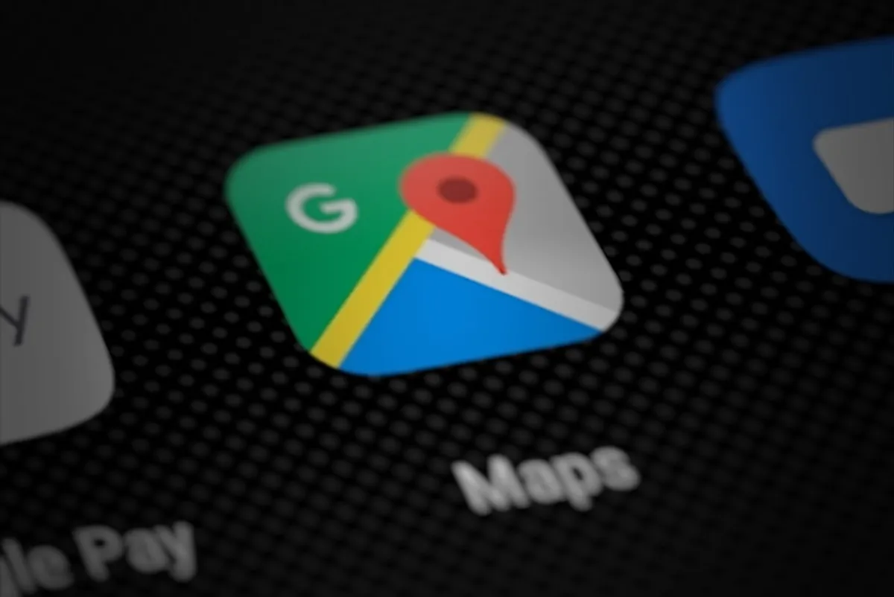

Cómo conseguir más reseñas en Google: 15 estrategias que sí funcionan (y respetan las reglas)
15 formas comprobadas de conseguir más reseñas en Google para tu negocio en México, sin romper las reglas y sin incomodar a tus clientes.

En resumen
- Pide la reseña en el momento de mayor satisfacción del cliente y con el enlace directo, sin pasos intermedios.
- Google prohíbe ofrecer descuentos o regalos a cambio de reseñas y pedirlas solo a clientes felices.
- Responder todas las reseñas, también las malas, aumenta la confianza y es una recomendación oficial de Google.
- Una tarjeta NFC con código QR quita fricción: el cliente toca y la ventana para calificar se abre al instante.
Contenido del artículo
Antes de visitar un restaurante, agendar con un dentista o llevar el coche al taller, casi todos hacemos lo mismo: buscamos el negocio en Google y leemos qué opinan otros clientes. En la encuesta 2026 de BrightLocal, el 97% de los consumidores dijo leer reseñas cuando evalúa un negocio local. Y no es solo un tema de imagen: Google confirma en su guía de posicionamiento local que el número de reseñas y las valoraciones positivas influyen en qué tan arriba aparece tu negocio.
La buena noticia es que la mayoría de los clientes satisfechos sí está dispuesta a dejar una reseña; simplemente nadie se los pidió en el momento correcto o el proceso fue demasiado largo. En esta guía reunimos 15 estrategias prácticas, pensadas para negocios en México, que te ayudan a conseguir más reseñas reales sin romper las reglas de Google.
Por qué las reseñas de Google importan tanto
Las reseñas cumplen tres funciones a la vez:
- Confianza: son la prueba social que convence a un cliente nuevo de elegirte en lugar de a la competencia.
- Visibilidad: forman parte de la «prominencia», uno de los tres factores con los que Google ordena los resultados de Maps (te lo explicamos a fondo en nuestra guía de SEO local).
- Información: te dicen qué hacen bien tu equipo y tu producto, y qué hay que corregir.
Además, los clientes no solo miran el promedio. Según la misma encuesta de BrightLocal (realizada con consumidores de Estados Unidos, pero muy útil como referencia), el 74% busca reseñas de los últimos tres meses, el 68% exige al menos cuatro estrellas y el 47% no usaría un negocio con menos de 20 reseñas. Es decir: necesitas un flujo constante de reseñas, no una campaña de una sola vez.

Primero, las reglas: lo que Google no permite
Antes de pedir reseñas conviene conocer la política de contenido prohibido de Google Maps. Estas prácticas se consideran manipulación y pueden provocar que se eliminen reseñas o que se restrinja tu perfil:
- Ofrecer incentivos a cambio de reseñas: pagos, descuentos, cortesías o productos gratis.
- Pedir reseñas solo a clientes satisfechos o desanimar a quien quiere dejar una opinión negativa.
- Pedir a tu personal que consiga un número determinado de reseñas o que solicite reseñas con contenido específico (por ejemplo, que mencionen a un empleado).
- Publicar reseñas propias, de empleados o de personas con un conflicto de intereses.
- Ofrecer algo para que un cliente cambie o retire una reseña negativa.
Lo que sí está permitido, y Google lo recomienda en sus consejos para obtener más reseñas, es pedir a tus clientes que compartan su experiencia real. Todas las estrategias de esta guía van en esa línea. Si quieres profundizar, lee nuestro artículo sobre reseñas falsas y políticas de Google.
15 estrategias para conseguir más reseñas en Google
1. Consigue tu enlace directo de reseñas
Todo empieza aquí. Google genera un enlace corto (y un código QR) que lleva al cliente directo a la ventana para calificarte, sin buscar tu negocio ni dar clics de más. Lo obtienes desde tu Perfil de Empresa en la opción «Pedir reseñas». Te lo explicamos paso a paso en cómo encontrar tu enlace de reseñas de Google, y Google lo documenta en esta página de ayuda.
2. Pide la reseña en el momento de mayor satisfacción
El cuándo importa tanto como el cómo. Pide la reseña cuando el cliente acaba de vivir lo mejor de tu servicio: al probar el postre, al ver su corte terminado, al recibir su coche reparado o al salir de una consulta en la que le resolviste un problema. Si esperas a que llegue a su casa, la emoción ya pasó.
3. Elimina la fricción con una tarjeta NFC
Cada paso extra hace que un cliente abandone: abrir Google, buscar tu nombre, encontrar el botón, iniciar sesión… Una tarjeta NFC de reseñas reduce todo a un gesto: el cliente acerca su celular y se abre la ventana para calificar. Si su teléfono no tiene NFC, escanea el código QR impreso en la misma tarjeta.
4. Pídela en persona y con una frase sencilla
Una petición personal funciona mejor que un letrero. Entrena a tu equipo con una frase natural y sin presión, por ejemplo: «Nos ayudaría mucho que nos dejaras tu opinión en Google; solo acerca tu celular a esta tarjeta». Evita frases como «déjanos cinco estrellas»: pide una opinión honesta.
5. Coloca recordatorios donde el cliente espera
Caja, mostrador, recepción, carpeta de la cuenta, mesa, espejo de la estética, sala de espera. Son lugares donde el cliente tiene unos segundos libres y el celular en la mano.
6. Incluye el enlace en tus mensajes de WhatsApp
Si confirmas citas o pedidos por WhatsApp, agrega el enlace de reseñas en el mensaje de agradecimiento. Google sugiere incluirlo al final de una conversación o en correos de agradecimiento.
7. Ponlo en tickets, facturas y empaques
Un código QR impreso en el ticket o en la bolsa de entrega recuerda la reseña cuando el cliente ya está disfrutando tu producto. Funciona muy bien en restaurantes con servicio a domicilio.
8. Responde todas las reseñas
Google recomienda responder porque demuestra que valoras a tus clientes, y los consumidores lo esperan: el 89% espera que los dueños respondan. Cuando un cliente ve que contestas, siente que su opinión será leída. Si no sabes cómo responder las críticas, usa nuestras 8 plantillas para reseñas negativas.
9. Pídela a todos, no solo a los clientes felices
Además de ser una regla de Google, pedir reseñas a todos genera un perfil más creíble. Un negocio con 4.7 estrellas y algunas críticas bien respondidas inspira más confianza que uno con un 5.0 perfecto y sospechoso.
10. Facilita reseñas a quienes tienen varias sucursales
Cada sucursal tiene su propio perfil y su propio enlace. Asegúrate de que cada tarjeta y cada QR apunten al perfil correcto; si no, las reseñas se van a la sucursal equivocada.
11. Enseña a tu equipo por qué importa
Explícale a tu personal que las reseñas atraen clientes nuevos y que sirven para reconocer su trabajo. Eso sí: recuerda que Google prohíbe fijarles cuotas de reseñas. Motívalos a pedirla siempre, no a «conseguir» un número.
12. Agrega el enlace a tu sitio web y redes sociales
Un botón de «Califícanos en Google» en tu página, en la biografía de Instagram o en una historia destacada te consigue reseñas de clientes recurrentes que nunca lo habían pensado.
13. Usa las reseñas para mejorar
Lee lo que repiten tus clientes. Si varios mencionan la espera, el ruido o el estacionamiento, corrígelo y menciónalo en tus respuestas. Las mejoras visibles generan mejores reseñas a futuro.
14. Mantén un ritmo constante
Como los clientes valoran las reseñas recientes, es mejor recibir unas cuantas cada semana que muchas en un mes y luego nada. La forma más fácil de lograrlo es que pedir la reseña sea parte del proceso de cierre de cada venta.
15. Mide tus resultados
Anota cuántas reseñas tienes hoy y revísalo cada semana. Si colocas tarjetas en la caja, compara el antes y el después. Lo que se mide, se mejora.
Plan de 30 días para empezar
| Semana | Acción | Resultado esperado |
|---|---|---|
| 1 | Verifica y completa tu Perfil de Empresa; obtén tu enlace de reseñas. | Perfil listo para recibir reseñas. |
| 2 | Coloca tarjetas NFC y QR en caja, mesas o recepción; entrena a tu equipo con una frase. | Primeras reseñas nuevas. |
| 3 | Responde todas las reseñas pendientes, buenas y malas. | Mayor confianza de quien visita tu perfil. |
| 4 | Agrega el enlace a WhatsApp, tickets y redes; revisa tu conteo semanal. | Flujo constante de reseñas. |
Errores comunes que debes evitar
- Comprar reseñas o «paquetes de estrellas»: además de ir contra las reglas, Google las detecta y las elimina.
- Pedir la reseña días después: el cliente ya olvidó la experiencia.
- Mandar a buscar tu negocio: «búscanos en Google» pierde a la mitad de las personas en el camino; usa el enlace directo.
- Ignorar las críticas: una reseña negativa sin respuesta pesa más que una bien contestada.
Conclusión
Conseguir más reseñas en Google no depende de trucos, sino de un sistema sencillo: pedirlas a todos tus clientes, en el momento correcto y con el menor número de pasos posible. Si tu enlace está a un toque de distancia, tus clientes satisfechos harán el resto.
Preguntas frecuentes
¿Es legal pedir reseñas a mis clientes?
Sí. Google permite y recomienda pedir reseñas a tus clientes. Lo que prohíbe es ofrecer incentivos (descuentos, regalos o pagos) a cambio, pedirlas solo a clientes satisfechos o pedir que incluyan contenido específico.
¿Cuántas reseñas necesita mi negocio en Google?
No hay un número mágico, pero importan la cantidad, la calificación y qué tan recientes son. En la encuesta 2026 de BrightLocal, el 47% de los consumidores dijo que no usaría un negocio con menos de 20 reseñas y el 74% busca reseñas de los últimos tres meses.
¿Puedo regalar un postre o un descuento a quien deje una reseña?
No. Según la política de Google, ofrecer bienes o servicios gratuitos o con descuento a cambio de reseñas es participación falsa y puede provocar que se eliminen reseñas o que se restrinja tu perfil.
¿Qué es el enlace directo de reseñas?
Es un enlace corto que Google genera desde tu Perfil de Empresa. Al abrirlo, el cliente llega directo a la ventana para calificarte, sin tener que buscar tu negocio.
Fuentes y referencias
- Consejos para obtener más reseñas de Google — Ayuda de Perfil de Empresa de Google
- Crear un enlace o código QR de Google para pedir reseñas — Ayuda de Perfil de Empresa de Google
- Contenido prohibido y restringido — Políticas de contenido aportado por usuarios de Google Maps
- Cómo mejorar tu posicionamiento local en Google — Ayuda de Perfil de Empresa de Google
- Local Consumer Review Survey 2026 — BrightLocal
Las marcas mencionadas pertenecen a sus respectivos dueños. Las imágenes provienen de Wikimedia Commons y se usan según su licencia libre, indicada en cada pie de foto.

Diseñamos y programamos tarjetas NFC con código QR para negocios de todo México. Escribimos estas guías con base en la documentación oficial de Google, Apple y Android y en lo que aprendemos todos los días con nuestros clientes.
Contáctanos · Cómo funcionan nuestras tarjetas